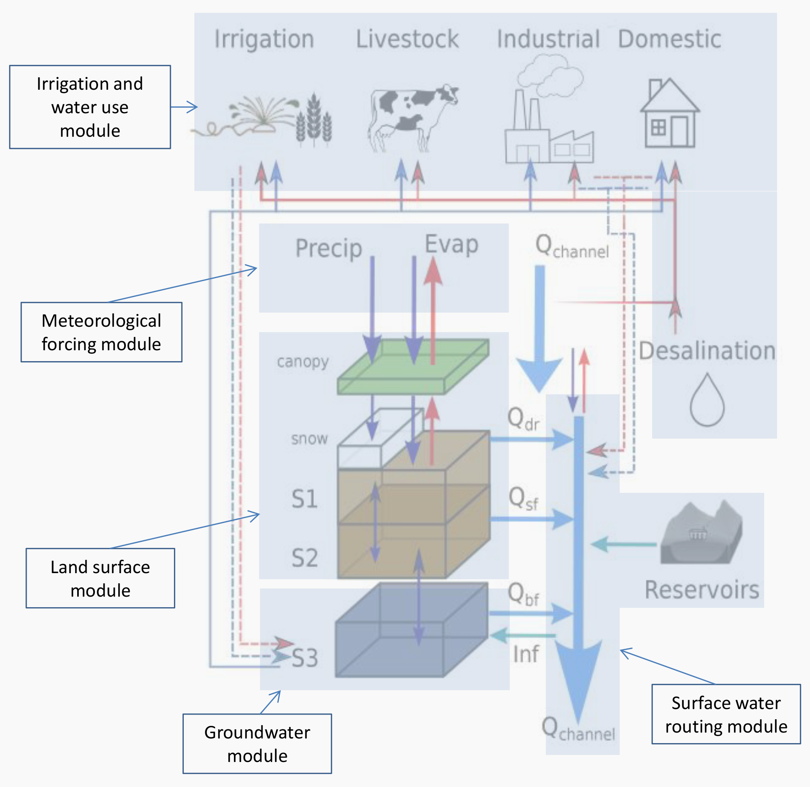
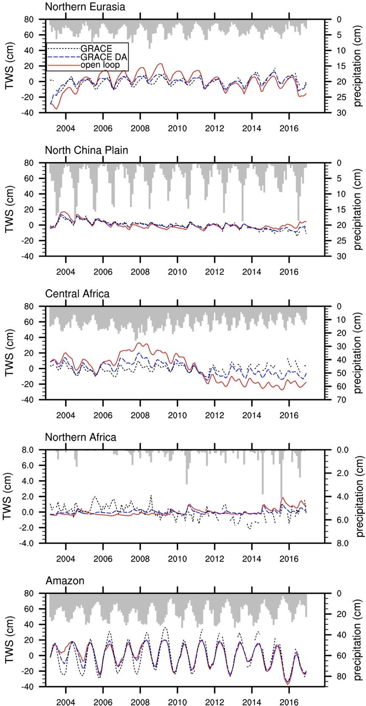
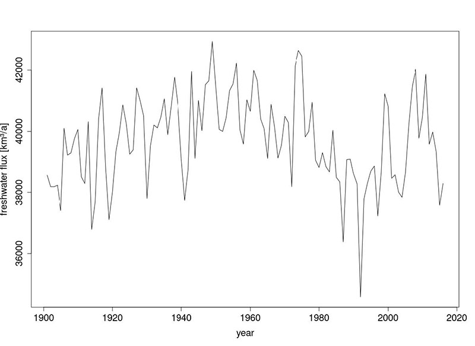

My newsfeed presented me with a new article from the Washington Post, entitled “Here’s where water is running out in the world — and why ”. This is precisely the sort of shock headline that makes science seem both dismal and omnipotent—The world isn’t technically running out of water (the molecule H2O), so the authors must mean “clean” or “fresh” water, which is renewable, by definition. Not only does the headline induce fear of global dehydration, but it also proclaims that the reason for this tragic outcome will be revealed in scientifically sanctioned data. That’s some cheap carnival barker shit, for sure.
First, let’s look at the background of the reporters. Veronica Penney has a master’s from Columbia in “data journalism”. John Muyskens is described as a “graphics reporter focusing on climate change and environmental justice.” As a consequence of these professional pedigrees, the article comes with pretty maps and great special effects, but what about the data? If the data is inaccurate, stunning maps won’t help understanding. Further, if we know the cause without a solution, then all that’s been accomplished is to put forth another “climate change” catastrophe.
The article begins:
An analysis of newly released data from the World Resources Institute (WRI) shows that by 2050 an additional billion people will be living in arid areas and regions with high water stress, where at least 40 percent of the renewable water supply is consumed each year.
Parsing this carefully, the authors have punted their reporter’s responsibility 1 to WRI—these journalists are just digesting someone else’s technical report for us. And it cannot be based on new measurements because the numbers are projections for the future. So, at least for me, the rest of the article is fluff. We can dig down.
As a persistent reminder from these pages, projections of future outcomes (including water supply, water use, and population) come from models, and “all models are wrong; some are useful.” So this isn’t science “news” in the same league as “astronomers have discovered a new planet.” Nevertheless, looking at the underlying primary data might be helpful to see whether we should be scared enough to start hoarding potable water.
What, exactly, is “water stress” anyway? Well, it’s one of thirteen (!) different factors the modelers consider to define a composite score of “water risk”. Many of these are qualitative (like “Peak Reputational Risk by country, ESG Risk Index”). So, let’s focus on the “baseline water stress” measurement, which hopefully has more data and less modeling.
Conceptually, “water stress” is a simple concept. It’s a ratio of demand to supply over a defined period (months to years), expressed as a percentage. The study defines “high water stress” as anything above 40%. Unfortunately, the math renders arid areas challenging to measure because they are essentially uninhabited due to the lack of fresh water—“water stress” in areas with no supply and no demand will have a very high degree of uncertainty.
So, why 40%? It traces back to an earlier report 2 , with a footnote reference that states:
Although several groups have attempted to set minimum environmental flow requirements for healthy freshwater ecosystems, differences in ecosystems and hydrological regimes around the world hinder the creation of a meaningful global standard.
That’s not very promising. It translates to “scientists can’t agree on a number” or perhaps “water stress depends on the particular geography”. WRI pulled this number out of thin air based on what they deemed suitable. Any model that reinforces preconceived bias is essentially useless.
We can get more insight by connecting the conclusion back to primary data. It turns out that water availability is divided by “basin” and “sub-basin” and uses a model called the PCR-GLOBWB 2 (PCRaster 3 Global Water Balance 2) model. Basins are defined topologically (a watershed), and 26 variables include soil and vegetation coverage. That kind of model is an elephant wiggling its trunk on steroids and is nearly useless. Here’s a diagram:

If there’s an actionable imbalance, where is it? I can think of two places to look—first, there’s groundwater depletion, and second, there’s precipitation in time and space. Groundwater depletion would mean that we are pumping water from the ground faster than it’s replenished, a well-documented phenomenon that is causing the sinking of California’s Central Valley. Reduced fresh water from precipitation would mean that either less rain is falling over the land or more intense storms are causing more water to flow out to the ocean ( Q channel ) before it soaks in. A third option is that the atmosphere is retaining more water because of global warming can be ruled out because the temperature changes have been too small.
Let’s dig into the details.
There is a fascinating source of primary data for groundwater depletion—satellite measurements of gravitational strength. It turns out that changes in subsurface water cause slight changes in gravitation that can be measured from space! NASA’s GRACE mission, although relatively low resolution, can see both seasonal and annual trends in groundwater. Here’s what a recent study 4 that looked at ground truth (from wells) and satellite data showed:

Zero TWS is the status quo, but is it falling overall? While prolonged droughts show up as local groundwater depletion, the phenomenon seems regional rather than global. There’s no dramatic loss of groundwater happening globally, and it appears to be replenished by rainfall. There is a caveat that gravity is two-dimensional, so the storage depth is unknown, but it’s pretty clear that we’re not running out of water globally. It may not be where we always want it to be, but that’s nothing new.
For water flow, it’s been aggregated by the Global Runoff Data Centre:

Here, we see a trend of lower runoff starting around 1960, with a drop of about 1,000 km3/year over nearly 60 years, with a lot of annual variability. That appears significant. But is this a lot of water or a little? Even if so, it’s in the wrong direction—less is falling, or more is being absorbed.
Well, it’s been estimated that 0.01% of the total water on Earth is in reservoirs. That works out to about 140,000 km3. So, I bet that the observed flow reduction is a consequence of increased use by humans for irrigation rather than climate anything. The Aswan Dam (1970) and Three Gorges Dam (2012), for example, hold back a lot of fresh water from mixing into the ocean!
So, I’m not hoarding water. What you do is your choice!
According to the Washington Post’s standards for sources :
We prefer at least two sources for factual information in Post stories that depend on confidential informants, and those sources should be independent of each other. We prefer sources with firsthand or direct knowledge of the information. A relevant document can sometimes serve as a second source. There are situations in which we will publish information from a single source, but we should do so only after deliberations involving the executive editor, the managing editor and the appropriate department head. The judgment to use a single source depends on the source’s reliability and the basis for the source’s information.
Reig, P., T. Shiao and F. Gassert. 2013. “Aqueduct Water Risk Framework.” Working Paper.Washington, DC: World Resources Institute. Available online at wri.org .
PCRaster is a specialized software package aimed at environmental modeling.